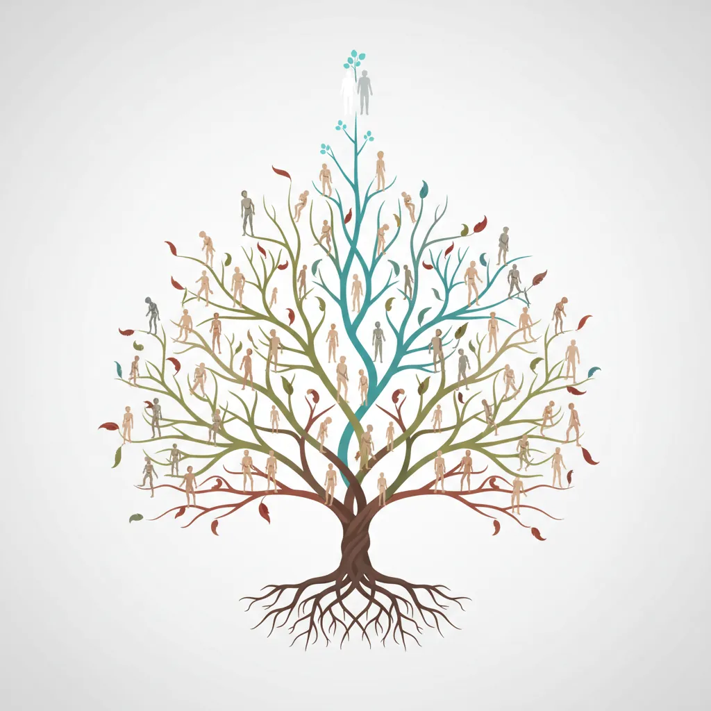
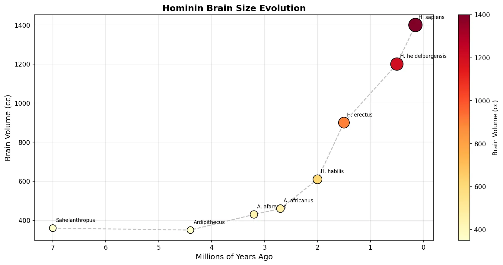
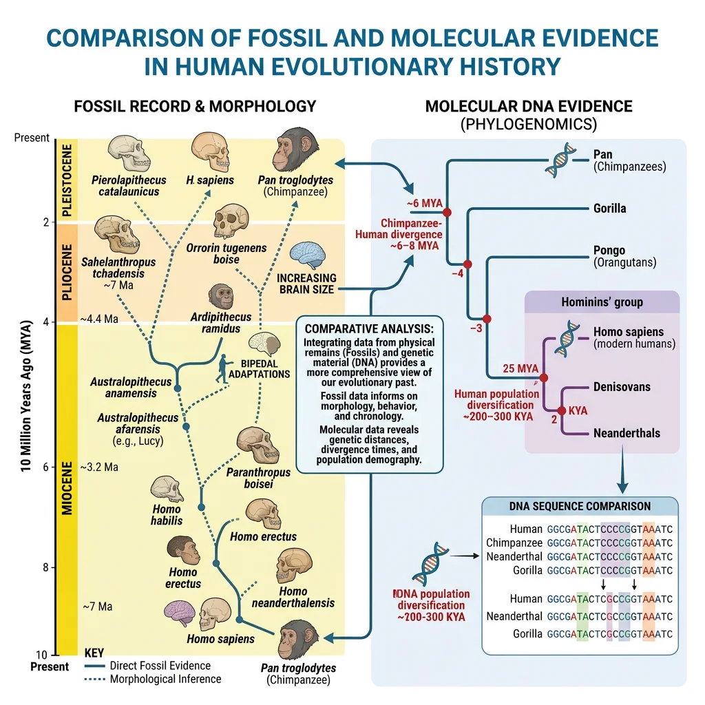
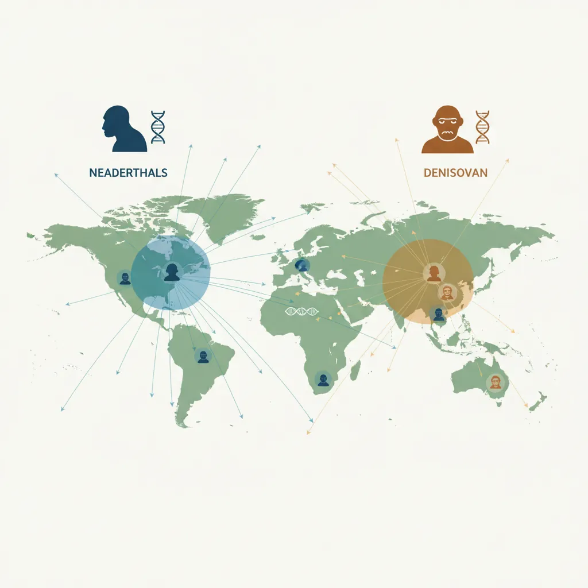
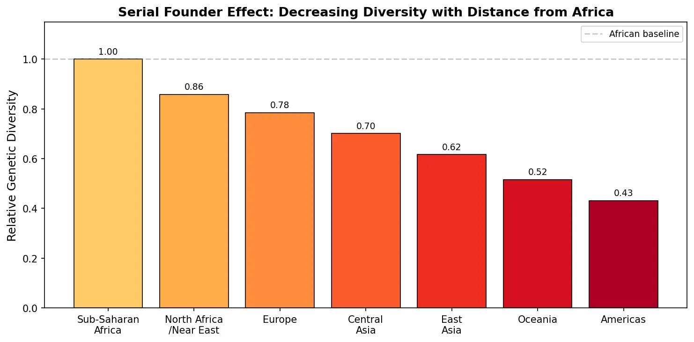
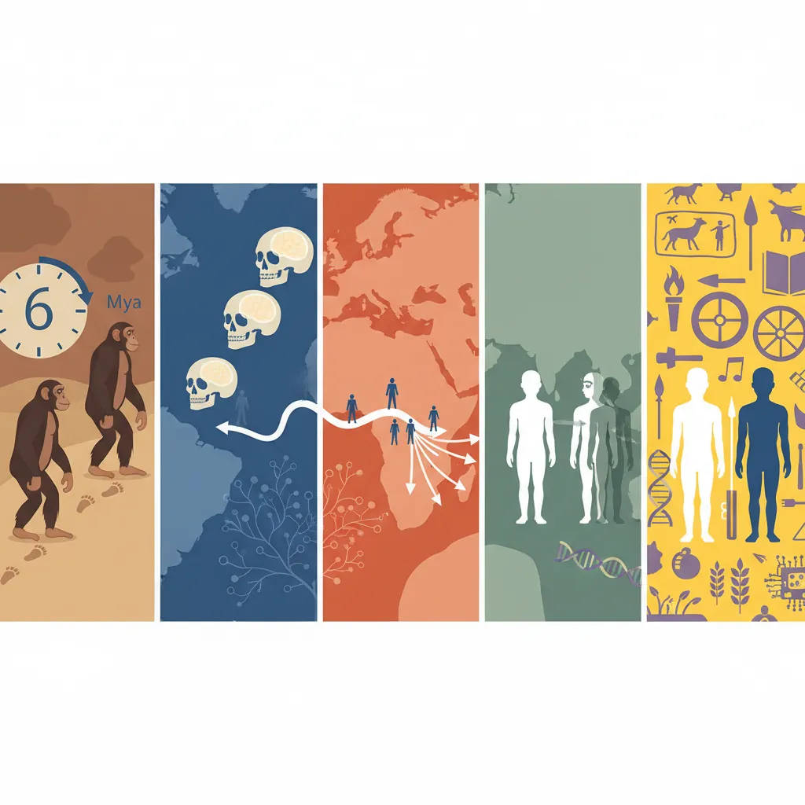

Evolutionary Biology Mastery
Darwin, Wallace & Natural Selection
Foundations, selection types, inclusive fitness, trade-offsGenetics of Evolution
DNA, population genetics, Hardy-Weinberg, molecular clocksSpeciation & Adaptive Radiation
Species concepts, reproductive isolation, rapid diversificationPhylogenetics & Taxonomy
Tree thinking, cladistics, molecular phylogenetics, classificationHuman Evolution & Migration
Hominin lineage, fossil evidence, Neanderthals, cultural evolutionCo-evolution & Symbiosis
Arms races, host-parasite, endosymbiosis, holobiontMass Extinctions & Biodiversity
Big Five extinctions, biodiversity patterns, conservationEvolutionary Developmental Biology
Hox genes, morphological innovation, heterochronyBehavioral & Social Evolution
Cooperation, game theory, sexual strategies, social insectsMathematical & Theoretical Evolution
Fitness landscapes, adaptive dynamics, ESS, selection modelsPaleontology & Fossil Interpretation
Radiometric dating, transitional fossils, taphonomyEvolutionary Genomics
Comparative genomics, gene duplication, HGT, epigeneticsHominin Lineage
The story of human evolution stretches back over 65 million years to the earliest primates. Understanding our lineage requires tracing a complex, branching tree — not a single linear chain — through dozens of species, only one of which (us) survives today. Think of it as a dense bush rather than a ladder.

Early Primates
Primates emerged in the Paleocene epoch (~66–56 million years ago) as small, insectivorous, nocturnal mammals. Key adaptations that define our order include:
- Forward-facing eyes — stereoscopic (3D) vision for depth perception in trees
- Grasping hands and feet — opposable thumbs and big toes for gripping branches
- Large brains relative to body size — enhanced visual processing and social cognition
- Nails instead of claws — flat nails with sensitive fingertip pads
Around 25 million years ago, the Old World monkeys and apes diverged. By ~14 million years ago, early apes were diverse across Africa, Europe, and Asia. The human-chimpanzee lineage split approximately 6–7 million years ago in Africa, based on molecular clock estimates calibrated by fossil evidence.
Australopithecines
The australopithecines ("southern apes") were the first hominins to walk upright habitually. They lived in Africa from roughly 4.2 to 1.2 million years ago and represent a critical transition — bipedal but still small-brained.
"Lucy" — Australopithecus afarensis (AL 288-1)
Discovered in Hadar, Ethiopia, "Lucy" is a 3.2-million-year-old partial skeleton (~40% complete) of a small female (~1.1 m tall, ~29 kg). Her pelvis and knee joint proved conclusively that she walked upright, yet her brain was only about 400 cc — roughly the size of a chimpanzee's. This shattered the long-held assumption that large brains evolved before bipedalism. Instead, bipedality came first, and brain expansion followed millions of years later.
| Species | Date (mya) | Brain (cc) | Key Features |
|---|---|---|---|
| Sahelanthropus tchadensis | ~7 | ~360 | Oldest possible hominin; foramen magnum suggests bipedality |
| Ardipithecus ramidus | ~4.4 | ~350 | "Ardi" — bipedal but with grasping big toe; woodland habitat |
| Australopithecus afarensis | 3.9–2.9 | ~430 | "Lucy"; confirmed biped; Laetoli footprints |
| A. africanus | 3.3–2.1 | ~460 | Gracile; South Africa (Taung Child) |
| Paranthropus boisei | 2.3–1.2 | ~510 | "Nutcracker Man"; massive jaw for tough plant foods |
Homo habilis → Homo erectus → Homo sapiens
The genus Homo emerged around 2.8 million years ago with traits that distinguish us from earlier hominins: larger brains, smaller teeth, and — critically — tool manufacture.
- Homo habilis (~2.4–1.4 mya, brain ~610 cc) — "Handy Man" associated with the Oldowan stone tool culture; simple flaked pebble tools
- Homo erectus (~1.9 mya–110 kya, brain ~900 cc) — the first hominin to leave Africa; controlled fire; made Acheulean hand axes; remarkably successful, surviving for nearly 2 million years
- Homo heidelbergensis (~700–200 kya, brain ~1200 cc) — probable ancestor of both Neanderthals and modern humans; evidence of communal hunting and wooden spears
- Homo sapiens (~300 kya–present, brain ~1400 cc) — earliest fossils from Jebel Irhoud, Morocco (315 kya); symbolic behaviour, language, cumulative culture
import numpy as np
import matplotlib.pyplot as plt
# Hominin brain size evolution over time
species = ['Sahelanthropus', 'Ardipithecus', 'A. afarensis', 'A. africanus',
'H. habilis', 'H. erectus', 'H. heidelbergensis', 'H. sapiens']
age_mya = [7, 4.4, 3.2, 2.7, 2.0, 1.5, 0.5, 0.15]
brain_cc = [360, 350, 430, 460, 610, 900, 1200, 1400]
fig, ax = plt.subplots(figsize=(12, 6))
scatter = ax.scatter(age_mya, brain_cc, s=np.array(brain_cc)/3,
c=brain_cc, cmap='YlOrRd', edgecolors='black', zorder=5)
ax.plot(age_mya, brain_cc, '--', color='gray', alpha=0.5, zorder=1)
for i, sp in enumerate(species):
ax.annotate(sp, (age_mya[i], brain_cc[i]),
textcoords="offset points", xytext=(5, 10), fontsize=8)
ax.set_xlabel('Millions of Years Ago', fontsize=12)
ax.set_ylabel('Brain Volume (cc)', fontsize=12)
ax.set_title('Hominin Brain Size Evolution', fontsize=14, fontweight='bold')
ax.invert_xaxis()
ax.grid(alpha=0.3)
plt.colorbar(scatter, label='Brain Volume (cc)')
plt.tight_layout()
plt.show()

Fossil & Genetic Evidence
Human evolution is reconstructed from two complementary lines of evidence: the physical record (fossils, tools, archaeological sites) and the molecular record (DNA from living and ancient organisms). Together they provide a far richer picture than either alone.

Comparative Anatomy
Fossil hominins reveal a mosaic of ancestral and derived traits. Key anatomical evidence for bipedalism, diet, and cognitive evolution includes:
| Anatomical Feature | Ape Condition | Human Condition | Evolutionary Significance |
|---|---|---|---|
| Foramen magnum | Posterior (back of skull) | Inferior (base of skull) | Indicates upright head carriage — bipedalism |
| Pelvis | Long, narrow ilium | Short, wide ilium | Bowl-shaped pelvis supports viscera when upright |
| Foot | Divergent big toe (grasping) | Adducted big toe + arch | Efficient push-off during walking; no longer arboreal |
| Canine teeth | Large, projecting, honing | Small, non-projecting | Dietary shift and reduced male-male combat signals |
| Cranial capacity | ~400 cc (chimp) | ~1400 cc (modern) | 3.5× increase over ~7 million years |
Laetoli Footprints — Direct Evidence of Bipedalism
In 1978, Mary Leakey's team discovered a 27-metre trail of hominin footprints preserved in volcanic ash at Laetoli, Tanzania, dated to 3.66 million years ago. The prints show a modern-like arched foot with a non-divergent big toe — unmistakable evidence that Australopithecus afarensis walked fully upright, long before brain expansion. Two individuals walked side by side, one slightly larger than the other, with a possible third set of prints overlapping. This is the oldest direct evidence of bipedal locomotion in any hominin.
Ancient DNA
The ancient DNA (aDNA) revolution, pioneered by Svante Pääbo (Nobel Prize 2022), has transformed paleoanthropology. By extracting and sequencing degraded DNA from fossils, scientists can now directly test hypotheses about relationships, migrations, and admixture that were previously based on morphology alone.
Key aDNA milestones:
- 2010 — First Neanderthal genome sequenced (Vindija Cave, Croatia); revealed admixture with modern humans
- 2010 — Denisovan genome from a finger bone fragment; an entirely new hominin identified from DNA alone
- 2013 — 400,000-year-old Homo heidelbergensis mitochondrial DNA from Sima de los Huesos, Spain — oldest hominin aDNA at the time
- 2022 — Svante Pääbo awarded Nobel Prize in Physiology or Medicine for founding the field of paleogenomics
Archaeological Tools
Stone tools provide a durable record of cognitive evolution. Each major tool tradition represents a leap in planning, dexterity, and abstract thinking:
| Tool Tradition | Age | Maker | Description |
|---|---|---|---|
| Lomekwian | ~3.3 mya | Unknown hominin | Oldest known stone tools; heavy, crude flakes from Lomekwi, Kenya |
| Oldowan | ~2.6 mya | H. habilis | Simple flaked pebble choppers; Olduvai Gorge, Tanzania |
| Acheulean | ~1.76 mya | H. erectus | Symmetrical teardrop hand axes; required planning and bilateral symmetry |
| Mousterian | ~300–30 kya | Neanderthals | Levallois technique — prepared core, predicting flake shape |
| Aurignacian | ~43–26 kya | H. sapiens | Blade tools, bone points, earliest cave art; Upper Palaeolithic revolution |
Interbreeding & Diversity
One of the most revolutionary discoveries of the genomic era is that our species did not evolve in isolation. Homo sapiens interbred with at least two other hominin species — Neanderthals and Denisovans — and potentially others we haven't yet identified. This is called admixture or introgression.

Neanderthal Introgression
Neanderthals (Homo neanderthalensis) lived in Europe and western Asia from ~400,000 to ~40,000 years ago. When modern humans migrated out of Africa ~60,000 years ago, the two species overlapped geographically for roughly 5,000–10,000 years — and interbred.
The Neanderthal Genome Project
In 2010, Svante Pääbo's team published the first draft Neanderthal genome (sequenced from bone fragments from Vindija Cave, Croatia). The bombshell result: 1–4% of the genomes of all non-African modern humans is derived from Neanderthals. This proved that humans and Neanderthals interbred, likely in the Near East shortly after humans left Africa. Specific Neanderthal-derived alleles persist because they were adaptively beneficial — for example, genes affecting immune response (HLA genes), skin and hair keratin, and cold-climate metabolism.
Beneficial Neanderthal DNA in modern humans:
- Immune genes — HLA class I alleles from Neanderthals boosted pathogen defence in Eurasia
- Skin/hair keratin — adaptation to colder, drier climates outside Africa
- Lipid metabolism — variants that affect fat processing, potentially advantageous in Ice Age diets
- EPAS1 (partial) — some altitude-related variants may trace to archaic admixture
Denisovans
The Denisovans are a group of archaic humans identified almost entirely from DNA. In 2010, a tiny finger bone fragment from Denisova Cave in Siberia yielded a genome that was clearly neither modern human nor Neanderthal — it was an entirely new hominin lineage, known only from a pinky bone, a jawbone from Tibet, and a few teeth.
Population Bottlenecks
Genetic evidence reveals that human populations have experienced severe bottleneck events — dramatic reductions in population size that sharply reduced genetic diversity:
- Out of Africa bottleneck (~60,000 years ago) — a small founder population (~1,000–10,000 individuals) left Africa and gave rise to all non-African populations. This is why non-African populations have significantly less genetic diversity than African populations
- Toba catastrophe hypothesis (~74,000 years ago) — the eruption of Mount Toba in Sumatra may have reduced the global human population to as few as ~10,000 breeding individuals, though this remains debated
- Serial founder effects — as humans migrated further from Africa, each new founding population carried a subset of the previous group's genetic variation, creating a gradient of decreasing diversity with distance from Africa
import numpy as np
import matplotlib.pyplot as plt
# Simulating genetic diversity loss through serial founder effects
np.random.seed(42)
regions = ['Sub-Saharan\nAfrica', 'North Africa\n/Near East', 'Europe', 'Central\nAsia', 'East\nAsia', 'Oceania', 'Americas']
diversity = [1.0]
for i in range(6):
diversity.append(diversity[-1] * np.random.uniform(0.82, 0.92))
fig, ax = plt.subplots(figsize=(10, 5))
colors = plt.cm.YlOrRd(np.linspace(0.3, 0.9, len(regions)))
bars = ax.bar(regions, diversity, color=colors, edgecolor='black', linewidth=0.8)
ax.set_ylabel('Relative Genetic Diversity', fontsize=12)
ax.set_title('Serial Founder Effect: Decreasing Diversity with Distance from Africa',
fontsize=13, fontweight='bold')
ax.set_ylim(0, 1.15)
for bar, val in zip(bars, diversity):
ax.text(bar.get_x() + bar.get_width()/2, bar.get_height() + 0.02,
f'{val:.2f}', ha='center', fontsize=9)
ax.axhline(y=1.0, color='gray', linestyle='--', alpha=0.4, label='African baseline')
ax.legend(fontsize=9)
plt.tight_layout()
plt.show()

Cultural Evolution
Humans are unique among animals in our capacity for cumulative culture — each generation builds on the innovations of the previous one, creating a ratchet effect that accelerates change far faster than biological evolution alone. This is why cultural change in the last 10,000 years has been vastly more dramatic than genetic change.
Language Emergence
Language is arguably the single most important adaptation in human evolution. It enables teaching, planning, storytelling, deception, alliance-building, and the transmission of accumulated knowledge across generations.
The timeline of language is debated, but key markers include:
- ~2 mya — H. erectus likely used proto-language (gesture, vocalisations) for tool-making instruction
- ~500 kya — Hyoid bone morphology in H. heidelbergensis supports vocal capability
- ~100 kya — Symbolic behaviour (ochre use, shell beads at Blombos Cave, South Africa) implies symbolic thinking prerequisite for language
- ~50 kya — "Great Leap Forward" / Upper Palaeolithic revolution: explosion of art, music, and complex technology — likely coinciding with fully modern language
Technology Evolution
Human technological evolution demonstrates a pattern of accelerating returns. Each innovation creates the platform for the next, and the pace of change has increased exponentially:
Key Transitions in Human Technology
Fire control (~1 mya) enabled cooking, extending the day, warmth, and defence. Agriculture (~10,000 years ago) triggered the Neolithic Revolution — settled communities, food surplus, population growth, social stratification, and the birth of civilisation. Writing (~5,000 years ago) allowed information to be stored externally, freeing human memory. Each transition fundamentally altered human biology (e.g., cooking reduced jaw muscles and freed energy for brain growth; agriculture led to lactase persistence in pastoral populations).
Gene–Culture Coevolution
Gene–culture coevolution (or dual inheritance theory) describes how cultural practices can change the selective environment and drive biological evolution. Culture is not merely a product of our genes — it feeds back and shapes them.
| Cultural Practice | Genetic Response | Mechanism |
|---|---|---|
| Dairy farming | Lactase persistence (LCT gene) | Adults who could digest milk had better nutrition in pastoral societies |
| Agriculture (starchy diets) | AMY1 gene copy number increase | More salivary amylase copies → better starch digestion |
| Cooking food | Jaw muscle reduction (MYH16 mutation) | Softer food relaxed selection for powerful jaw muscles; freed skull for brain expansion |
| High-altitude settlement | EPAS1 variant (from Denisovans) | Tibetans' haemoglobin regulation adapted to low O₂; introgressed allele was selected |
| Malaria-endemic farming | Sickle-cell allele (HBB gene) | Deforestation for farming increased mosquito habitat; sickle-cell heterozygotes gained malaria resistance |
Exercises & Review

Exercise 1: Hominin Timeline
Place the following hominins in chronological order (oldest first): Homo sapiens, Australopithecus afarensis, Homo erectus, Sahelanthropus tchadensis, Homo habilis.
Show Answer
- Sahelanthropus tchadensis (~7 mya)
- Australopithecus afarensis (~3.9–2.9 mya)
- Homo habilis (~2.4–1.4 mya)
- Homo erectus (~1.9 mya–110 kya)
- Homo sapiens (~300 kya–present)
Exercise 2: Neanderthal DNA Analysis
A non-African individual has 2.1% Neanderthal-derived DNA. An African individual has 0.3%. Explain: (a) Why the difference exists, (b) Why some Neanderthal alleles were retained by natural selection, (c) What this tells us about the Out of Africa migration.
Show Answer
(a) Modern humans interbred with Neanderthals after leaving Africa (~60,000 years ago), so non-African populations carry Neanderthal DNA but African populations largely do not (the small 0.3% may come from back-migration). (b) Neanderthal alleles for immune function (HLA), skin keratin, and cold-climate metabolism were advantageous in Eurasian environments and were positively selected. (c) The admixture occurred shortly after the Out of Africa event, likely in the Near East, before non-African populations diverged into European and Asian lineages — explaining why Neanderthal DNA is roughly equal across all non-African populations.
Exercise 3: Gene–Culture Coevolution
Explain how dairy farming led to the evolution of lactase persistence. Include: (a) the selective pressure, (b) why this is an example of gene–culture coevolution, (c) why lactase persistence is found in some populations but not others.
Show Answer
(a) In populations that herded cattle and consumed milk, individuals with a mutation that kept the LCT gene active into adulthood could digest lactose and extract more calories from milk — a strong nutritional advantage, especially during famines. (b) The cultural practice (dairy farming) created the selective environment that favoured the genetic change (lactase persistence) — neither would have occurred without the other. (c) Only populations with a long history of pastoralism evolved lactase persistence (e.g., Northern Europeans, Maasai, some Middle Eastern groups). Populations without dairy traditions (e.g., most East Asian populations) remain lactose-intolerant as adults — the ancestral condition for all mammals.
Downloadable Worksheet
Human Evolution & Migration Worksheet
Document your study of human origins, fossil evidence, admixture, and cultural evolution. Download as Word, Excel, or PDF.
Conclusion & Next Steps
The human story is one of adaptation, migration, and cultural innovation. From bipedal australopithecines on the African savanna to modern humans colonising every continent, our journey has been shaped by a continual interplay between genes, environment, and culture. The genomic revolution has revealed that our ancestors were far more interconnected than we imagined — interbreeding with Neanderthals, Denisovans, and potentially other archaic hominins whose DNA lives on in us today.